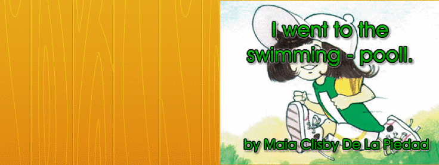

Maia’s Reading Eggs stories, 2011-2012
This is a collection of stories written by Maia for ABC Reading Eggs. She started in 2011, while in kindy, and then continued in bursts in 2012. I think that the last one she did was probably around mid 2012. This was about the time when her reading really took off, i.e. she started reading independently for enjoyment.
The story writing factory would create a different story template every week, with key words and images to choose from to create a story with.
Maia initially used the words and sentences provided, and also really enjoyed writing nonsense and having me read it to her. Later she had really intense bursts of creativity, writing out her own stories. This takes a great deal of concentration and imagination for someone who is learning to spell and type.
Stories, if saved, were submitted to a contest. I asked Maia to only submit the good ones, which she generally did.
I’ve collected most of the good stories here, as a testament to our daughter’s drive and creativity. The order is roughly chronological.
I like the fact that she spells words consistently - e.g. foriflos, sosij’s, disgo dans.
She loves punctuation, and anything to liven up the story. She discovered ellipses to extend a sentence over a page.
Great use of humour, e.g. pet bat story at the end.
Another favourite of mine is: the very big dragon who interrupted the very big soccer game. All of them are good :)
maia
1. Thee kaks..
3. Thee snak is itiing foriflos..
5. It rile wants mor..
7. I dont know wea came fom.
9. It is nathing.
11. Thesfils snaki. (Not sure if - best guess - "this fills snaky", or "this feels snaky".)
This is the first one that I remember Maia doing, where she really thought about the story. She used the inbuilt vocabulary for this one.
Great use of Cplop here!
the vary big axadant
1. I was raning.
3. I fawnd this thing
5. I stept on it ...
7. Cplop!
9. I feloa and ...
11. I was socingwet! thyend
hau i fel-ova
1. I was luking at this orinj thing.
3. I steptd on it and ...
5. It was wet sament so i sanck dawn and ...
7. I was soking wet.
9. Thea was a picha of me on the wet sament and ...
11. The man scoldad me.
the blind gie hoo wozznt rily blind
1. I was blind so i fel - ova on the - wet - sament.
3. The nise man helpt me up and ...
5. I was oll wet.
7. I stil thot i was blind.
9. The man helpt me awt and ...
11. I knaw niu that i wasint blind i jost was closing my eyes oll - the - time.
Haw the nise man helpt me aawt of a smoll problmb.
1. One day i-fel-ova and...
3. The nise man helpt me upand...
5. I was oll wet.
7. He tolld me too look dawn and...
9. Look at that!
11. I sed sory and ran awa. Thy end.
The VARY - BIG DRAGON hoo arupt the vary - big soka - game
1. I kikt a goll.
3. Evry - wan ran for the ball.
5. I said don’t tis red - tim.
7. Sadtli a BIG - DRAGON aruptd the BIG SOKOR - GAME.
9. He blu FAIYOR on - to a play’s fut.
11. But i was the wina i said gud game.
tising (Teasing)
1. Sam gorls tisd me in the mid of a soka game
3. But i kikt a goll eni - way shud i tell you haw i kikt it?
5. Well i trapt the ball.
7. No-one got it.
9. Thei athor tim wan but i was a gud - sport so i said gud - game.
11. I had sam yogt to chia me up.
I love her spelling of a number of words here
The ranyste day in the hol wide yunivorst.
1. It was a rani day.
3. The gras was wiping but ...
5. The tree gru.
7. Wen it stopt raning the dog got wosh’t he didn’t like it one litl bit.
9. I red the nioos.
11. Then I wen’t swimming!
The fish’s disgo-dans
1. It was the fish’s disgo-dans but.
3. It statd to ran.
5. It ran’d.
7. And it ran’d.
9. And it ran’d but the ran stop’t jost in tim for the ...
11. FISH’S DISGO-DANS!
My litll papy.
1. My litll papy isnot alaud to eat foriflos. But she ate my sok’s.
3. ODIA!!!
5. BAD DOG!!!
7. So we went to adopd her BUT ...
9. I kud neva let him go.
11. So she ate sosij’s. The end.
I andorstand
1. My dog chud on my sok’s that ment he was hanggri.
3. So he ate sosij’s.
5. WOOF WOOF WOOF!!! that ment I am stil hanggri s...
7. O he ate foriflos. BUT H...
9. E made a mess. WOT A MESS!
11. I andastand.
Bailey’s dog-siting wikend
1. I tuck bailey my anti brew’s dog for the wikend.
3. He ate ill the sosij’s.
5. Then he got sick.
7. Then he chud on my sok’s that ment take me home you see bree is a vet.
9. So we tuk him home.
11. We said thangk you and injoid the rest of the wikend. THE END.
BABLING-EXITMENT!!!
1. I was exitd bekos I was gowing to see babl’s for my forst tim.
3. I was so exitd I jumpd ova a soka-boll.
5. And I jumpd in the pooll to.
7. And I ran araund.
9. And I scipt.
11. And then I went to see babl’s for my forst time. THE - END!!!

Catsie.
1. Catsie my kitten is a vary vary vary cute fluffy furry magick kitten. She has the pawer to chanj the coler of her sckin.
3. She is vary vary vary ... vary speshall. And hangry.
5. I have alot of fun with her.
7. She get a little bit aoot of cntrall!!!!!
9. She tornd oringe and climbd a wole. She got frightened.
11. She played with a role of blu string. I love catsie.
How the dinosaurs were extinct
1. Once upon a time I fond some egg’s.
3. They hached, they were the only dinosaurs left.
5. They made a big mess.
7. LOOK AT THAT!!!!
9. Wow! I said.
11. They ate the posson - jose and they were DED!
Bats!!!!!!!!!!!!!!!!!!!!!!!!!!
1. I love bats.
3. I have pet bats.
5. My bat went on the roof.
7. A lady smashed him with her hand-bag.
9. And then he pooled my heir.
11. So ... I disided I wood have pet cake insted!!!!!!!!!!!!!!!!!!!!!!!!!!!!!!!!!